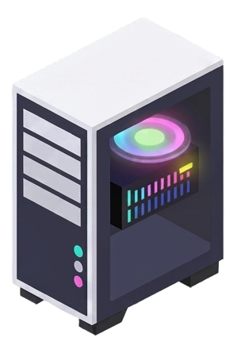
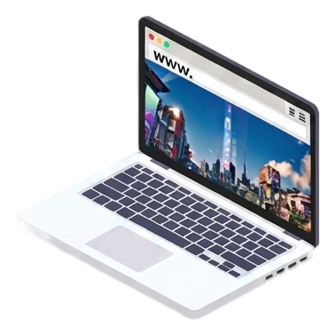
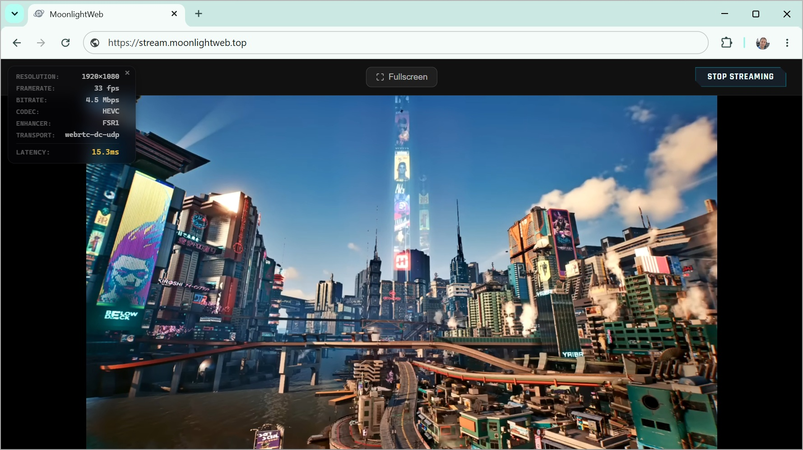
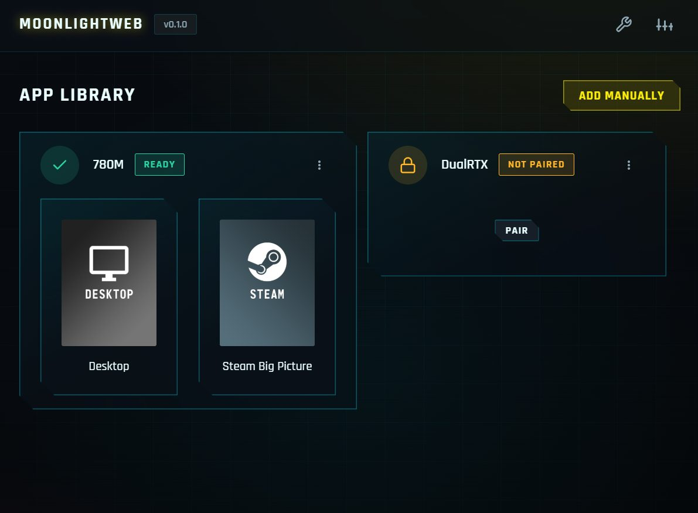
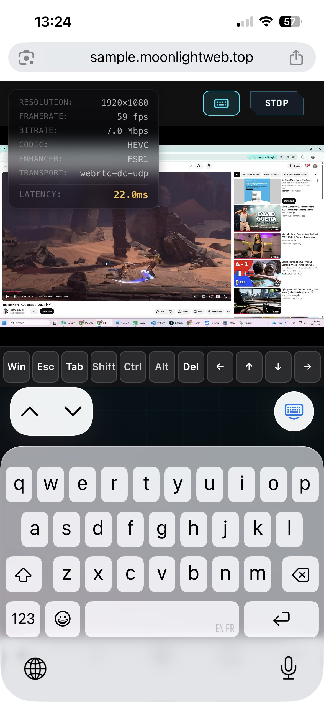
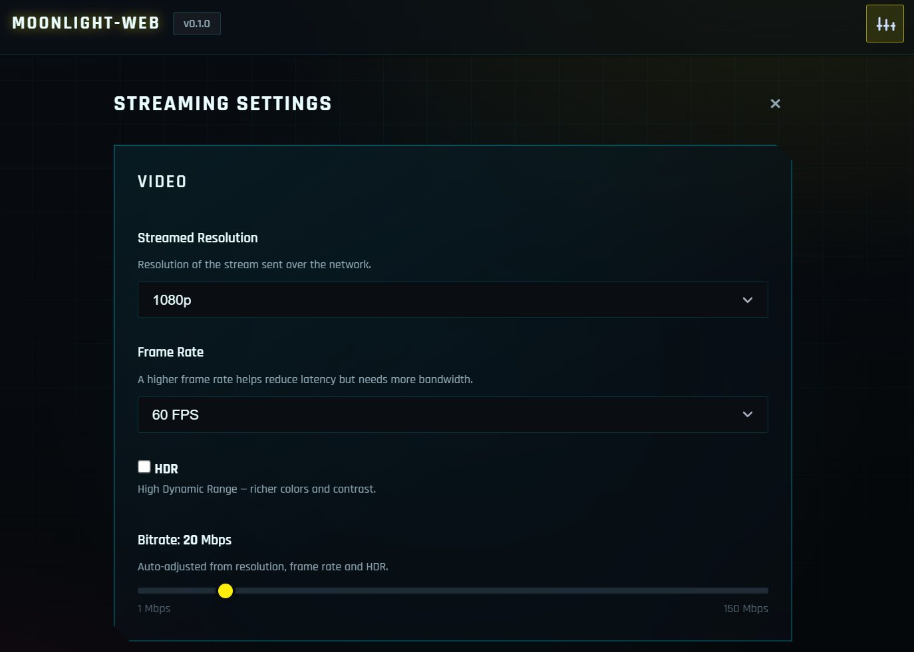
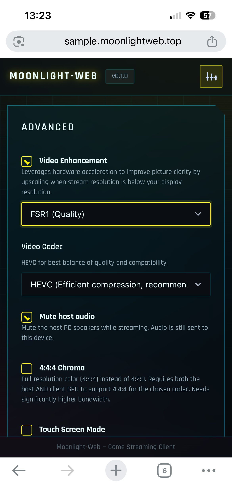
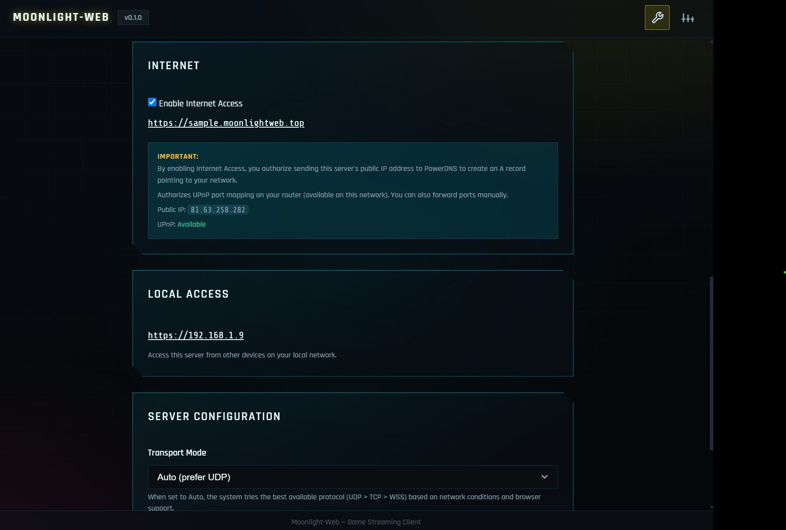

Your gaming PC.
Streamed to any browser.
MoonlightWeb streams your Sunshine gaming rig
to any device with a browser — phone, tablet, laptop, TV.
Free and open source. Nothing to install on the client. Just a URL.


MoonlightWeb
Browser only

Built like a native client.
Delivered like a web page.
Everything you expect from a serious game‑streaming client — running entirely in the browser.
Console‑grade latency
WebRTC UDP transport with adaptive congestion control — under 20 ms over Wi‑Fi. Play twitch shooters, not slideshow demos.
Up to 4K HDR, 240 fps
H264, HEVC and AV1, hardware‑decoded via WebCodecs. Real HDR on HDR displays.
Video Enhancement
GPU upscaling & sharpening (SGSRv1 + FSR1) in WebGPU. Stream 720p, see near‑1440p.
Surround Opus audio
Decoded in‑browser with an adaptive jitter buffer. Stays in sync even on flaky Wi‑Fi.
Full input, full rumble
Keyboard, pointer‑lock mouse, touch trackpad, virtual keyboard — and Xbox & PlayStation controllers with rumble.
Zero‑config discovery
Sunshine hosts appear automatically via mDNS. PIN pairing, multi‑host, persistent sessions.
One‑click Internet play
Auto sub‑domain, free TLS certificate and UPnP port mapping. Share a link, play from anywhere.
Never drops you
Transport auto‑fallback (UDP → TCP → WSS) rides through hostile networks and strict firewalls.
See it in action
Same rig, same games — every screen in the house (and beyond).
All your rigs.
One URL.
Open the page and your Sunshine machines are already there — discovered on the LAN, sorted, remembered.
- mDNS auto‑discovery — no IP hunting, hosts just show up
- PIN pairing — secure handshake in seconds
- Multi‑host — desktop, living‑room PC, home server

A gaming handheld,
hiding in your pocket.
Your phone becomes a full client: multi‑touch trackpad, native virtual keyboard with modifier keys, gamepad support — up to 240 fps with <20 ms Wi‑Fi latency.
- Touch trackpad — 1 finger aims, 2 scroll & pinch, taps click
- Real keyboard input — Win, Esc, Ctrl, arrows… all there
- Nothing from the App Store — Safari or Chrome is enough

Stream light.
Display sharp.
Video Enhancement upscales and sharpens the stream on your device's GPU — WebGPU running SGSRv1 and FSR1 shaders. Stream at 720p over 4G, watch it crisp on a 1440p panel.
- Less bandwidth, more detail — great on cellular and hotel Wi‑Fi
- Runs client‑side — zero extra load on the gaming PC
- Drag the slider — 720p stream vs. enhanced output →
Set it and forget it.
Or tweak everything.
Sane defaults with auto bitrate out of the box — and a full pro panel when you want control, on desktop and mobile alike.
- Resolution, FPS, bitrate — auto‑tuned, always overridable
- HDR & 4:4:4 chroma — for the pixel purists
- Codec choice — options your browser can't decode are simply greyed out


LAN party today.
Hotel room tomorrow.
Tick one box and your rig goes online: MoonlightWeb registers a personal sub‑domain, issues a free TLS certificate and maps the ports via UPnP. No dynamic‑DNS accounts, no reverse‑proxy homework.
- https://you.moonlightweb.top — your own address, automatically
- Free auto‑renewed TLS — padlock included
- Self‑hosted — your games never touch anyone's cloud

Playing in about 60 seconds
One small server on the gaming PC. Browsers everywhere else.
Run the server
On the machine where Sunshine runs. A tray icon appears — that's it for the install.
Open a browser
At https://localhost, your LAN IP, or your personal domain from any device.
Pair once
Your hosts are already listed. Enter the PIN Sunshine shows — done forever.
Press play
Pick a game or the full desktop. Fullscreen, gamepad in hand, go.
Under the hood: a C++/Qt backend embeds moonlight‑common‑c,
speaks GameStream (RTSP/RTP/ENet) to Sunshine, and relays video, audio and input to the browser over WebRTC —
with automatic WSS fallback. Decoding happens in WebCodecs, rendering in WebGPU, audio in an AudioWorklet.
Grab the server. Bring the games.
One download, on the gaming PC only. Every other device just opens a browser.
Playing from a phone, tablet or TV? Nothing to download — the client is your browser. All releases →
Press play on your own cloud.
GPL‑3.0, self‑hosted, no accounts, no subscriptions. Built by a long‑time contributor to the Moonlight ecosystem. A coffee helps keep the shared DNS domain online. ☕